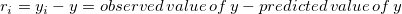
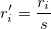
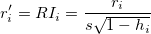
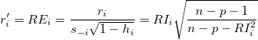
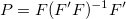

Das Residuum ist definiert als:

Residuendiagramme können zum Beurteilen der Qualität einer Regression verwendet werden. Zurzeit werden fünf verschiedene Arten von Residuendiagrammen in dem Dialog der linearen Anpassung unterstützt
Diese Residuendiagramme können zum Beurteilen der Qualität der Regression verwendet werden. Sie können die zugrunde liegenden statistischen Annahmen über Residuen wie konstante Varianz, Unabhängigkeit der Variablen und die Normalverteilung überprüfen. Damit diese Annahmen für ein bestimmtes Regressionsmodell wahr bleiben, sollten die Residuen zufällig um Null verteilt sein.
Es können verschiedene Arten von Residuendiagrammen verwendet werden, um die Gültigkeit dieser Annahmen zu prüfen und Informationen zu liefern, wie das Modell verbessert werden kann. Das Streudiagramm der Residuen wird beispielsweise ungeordnet sein, wenn die Regression gut ist. Die Residuen sollten keine Trends aufweisen. Ein Trend würde anzeigen, dass die Residuen nicht unabhängig sind. Andererseits sollte das Histogramm der Residuen eine symmetrische glockenförmige Verteilung aufweisen, was anzeigt, dass die Annahme der Normalverteilung richtig ist.
Ein Residuendiagramm, das einen ansteigenden Trend besitzt, lässt folgern, dass die Fehlervarianz mit der unabhängigen Variable ansteigt, während ein abfallender Trend anzeigt, dass die Fehlervarianz mit der unabhängigen Variable abfällt. Keine dieser Verteilungen besitzt ein konstantes Varianzmuster. Daher weisen sie darauf hin, dass die Annahme einer konstanten Varianz nicht zutrifft und die Regression nicht gut ist. Ein horizontales Muster hingegen deutet auf eine konstante Varianz der Residuen hin.
Das Diagramm Residuen vs. Ordnung der Daten kann zum Prüfen des Nullpunktfehlers der Varianz während des experimentellen Prozesses verwendet werden, wenn die Daten zeitlich geordnet sind. Sind die Residuen zufällig um Null verteilt, bedeutet dies, dass in dem Prozess kein Nullpunktfehler vorliegt.
Das verzögerte Residuendiagramm, erstellt durch Zeichnen des Residuums (i) gegen Residuum (i-1), ist nützlich für die Überprüfung der Abhängigkeit von Fehlertermen. Jedes nicht zufällige Muster in einem verzögertem Diagramm deutet darauf hin, dass die Varianz nicht zufällig ist.
Handelt es sich bei den analysierten Daten um Daten einer Zeitreihe (sequenziell aufgezeichnete Daten), zeigt das Diagramm Residuen vs. Ordnung der Daten die Korrelation zwischen Fehlerterm und Zeit an. Schwankende Muster um Null zeigen an, dass der Fehlerterm abhängig ist.
Das verzögerte Residuendiagramm zeigt, dass der Fehlerterm unabhängig ist.
Residuendiagramme für Zeitreihendaten
Das Histogramm der Residuen kann verwendet werden, um zu prüfen, ob die Varianz normalverteilt ist. Ein symmetrisches glockenförmiges Histogramm, das gleichmäßig um Null verteilt ist, zeigt an, dass die Annahme der Normalverteilung wahr ist. Zeigt das Histogramm, dass ein Zufallsfehler nicht normalverteilt ist, lässt dies vermuten, dass die dem Modell zugrunde liegenden Annahmen verletzt wurden.
Das Histogramm der Residuen zeigt, dass die Abweichung normalverteilt ist.
Das Wahrscheinlichkeitsnetz der Residuen (Normal) kann verwendet werden, um zu prüfen, ob die Varianz ebenfalls normalverteilt ist. Wenn das sich ergebende Diagramm linear ist, nehmen wir weiterhin an, dass die Fehlerterme normal verteilt sind. Das Diagramm basiert auf Perzentilen versus geordnete Residuen. Die Perzentile werden geschätzt von
}{(n+\frac{1}{4})}")
wobei n die Gesamtanzahl der Datensätze und i die i-ten Daten sind. Das Wahrscheinlichkeitsnetz der Residuen (Normal) sieht folgendermaßen aus:
Wahrscheinlichkeitsnetz der Residuen (Normal)
Die Strukturen der Residuendiagramme helfen nicht nur beim Prüfen der Güte eines Regressionsmodells, sie können auch helfen, es zu verbessern. Ein gekrümmtes Muster im Diagramm Residuen vs. Unabhängige deutet zum Beispiel darauf hin, dass ein Term höherer Ordnung zu dem Anpassungsmodell hinzugefügt werden sollte.

Dies ist nur ein Beispiel und sicherlich gibt es viele weitere, die aus dem Muster der Residuendiagramme entnommen werden können. Wir empfehlen, dass Sie für weitere Informationen die statistischen Referenzen am Ende dieses Kapitels/ Abschnitts lesen.
Wenn Sie nach Ausreißern in Ihren Daten suchen, kann es sinnvoll sein, die Residuen zu transformieren, um standardisierte, studentisierte oder studentisiert gelöschte Residuen zu erhalten. Diese transformierten Residuen werden wie folgt berechnet:
Standardisiert

Studentisiert
Sind auch bekannt als intern studentisierte Residuen.

Studentisiert gelöscht
Sind auch bekannt als extern studentisierte Residuen.

In den Gleichungen der studentisierten und studentisiert gelöschten Residuen ist  das i-te diagonale Element der Matrix P:
das i-te diagonale Element der Matrix P:

wobei F die Matrix der partiellen Ableitungen für ein nichtlineares Regressionsmodell ist.
In der linearen Regression ist die unabhängige Matrix X einfach gleich F.
^{-1}X^{\prime }")
Als Beispiel der Verwendung von transformierten Residuen skalieren die standardisierten Residuen die Residuenwerte mit Hilfe des Standardfehlers der Regression neu, so dass bei Geltung der Regressionsannahmen -- dies bedeutet, dass die Daten normalverteilt sind -- über 95% der Datenpunkte innerhalb von 2σ um die angepasste Kurve liegen sollten. Dementsprechend sollten 95% der standardisierten Residuen im Bereich -2 bis +2 im Residuendiagramm liegen.
Diese Variationen der Residuendiagramme sind sehr nützlich beim Entdecken von Ausreißern. Beispielsweise werden in dem Diagramm Standardisiertes Residuum vs. Unabhängig die Residuen mit Hilfe des Standardfehlers der Regression neu skaliert. Wenn die Regressionsannahmen gelten, d.h., die Daten sind normalverteilt, sollten ungefähr 95% der Datenpunkte innerhalb von 2σ um die angepasste Kurve verteilt sein, so dass folglich 95% der standardisierten Residuen zwischen -2 und +2 fallen, wie in der Abbildung unten zu sehen.
Daher sollten Residuen, die sich außerhalb dieses Bereichs befinden, genauer untersucht werden, da es sich bei diesen Punkten um Ausreißer handeln könnte.
Wenn Sie mit Hilfe einer OriginPro-Standardfunktion eine Oberfläche anpassen, wird ein Konturdiagramm der Residuen in der XY-Ebene erstellt. Die Konturintervalle sind durch den Sigmawert (den Modellfehler) festgelegt. Wie im Fall einer 2D-Anpassung sollte eine gute Anpassung der Regressionsoberfläche kein erkennbares Muster im Konturdiagramm der Residuen erzeugen.